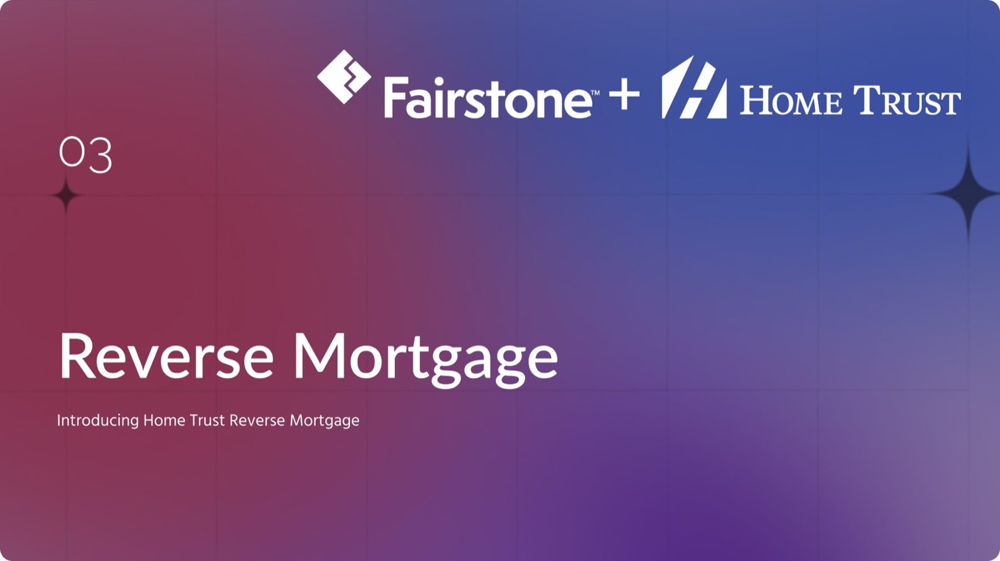
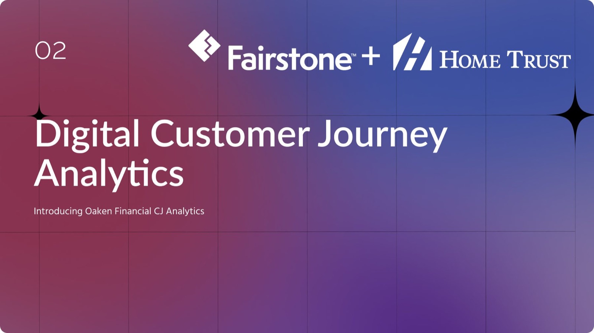

Fairstone Bank / Home Trust · Two shorter stories
A new product, and a new view of the customer.
Two projects told as the decks I presented them with: launching Home Trust's reverse mortgage, and rebuilding how Oaken understands its customers' journeys.
Deck 01 · 0 → 1
Product strategy · Fintech
Reverse Mortgage
A crowded market and growing demand led Home Trust to introduce a reverse mortgage product that builds brand trust and fuels post-merger growth.
Live product page ↗ (opens in a new tab)
Deck 02 · Data strategy
Analytics · Internal tools
Customer Journey Analytics
Our data tracking needed a major overhaul: insights were fragmented, unreliable and hard to act on. A unified data source replaced the silos.
